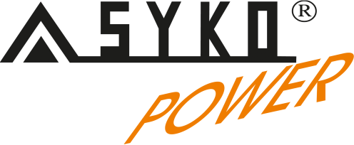
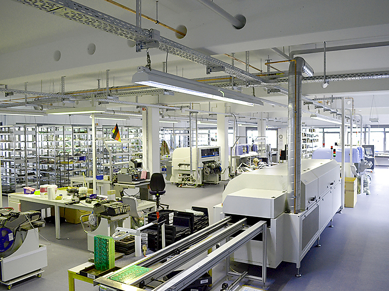
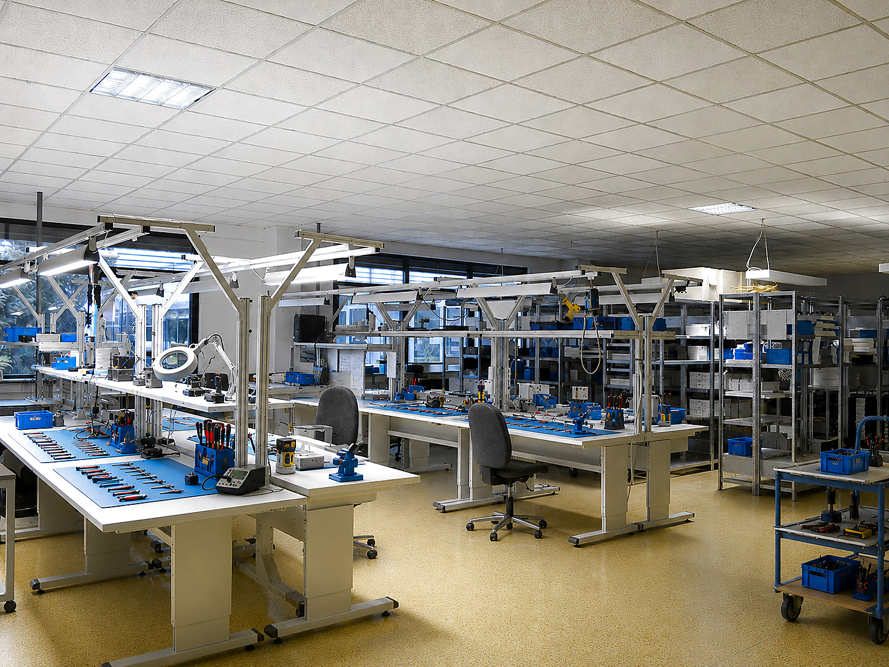
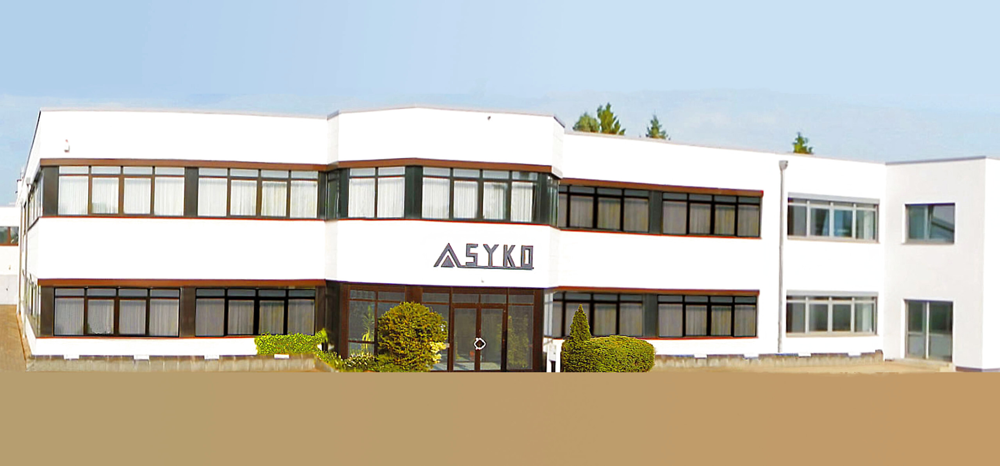
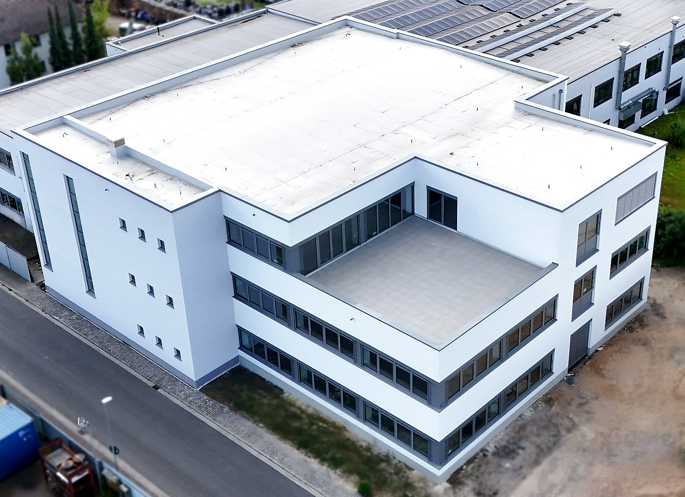

Praktikumsbericht:
SYKO Gesellschaft für Leistungselektronik mbH
Einblicke in die Fertigung, Bestückung und Endmontage sowie den Ausbildungsberuf Elektroniker/in für Geräte und Systeme
Inhaltsverzeichnis
Standort Mainhausen, Kennzahlen, Leistungselektronik & Bahntechnik
Von der Gründung 1973 bis zum modernen Hightech-Unternehmen
Elektroniker/in für Geräte und Systeme, Dauer & Vergütung
Techniker, Industriemeister, Technischer Fachwirt und Ingenieurstudium
Arbeitszeiten (8–14 Uhr), Ablauf: Fertigung, Bestückung, Endmontage
Löten, Platinen bekleben/entkleben, Aluminiumstücke verschrauben
Arbeit in der Endmontage & mein selbst gelöteter LED-Würfel
Vergleich zum Bauen mit LEGO, Erfahrungen, Fotogalerie & Rückfragen
Name, Standort und Unternehmenskennzahlen
Standort & Sitz
SYKO Gesellschaft für Leistungselektronik mbH
Jahnstraße 2, 63533 Mainhausen (Hessen, Kreis Offenbach, Nähe Hanau/Frankfurt).
Team & Größe
ca. 80 Mitarbeiter/innen
Inhabergeführtes mittelständisches Familienunternehmen in der 2. Generation mit flachen Hierarchien und eigenem Fertigungszentrum.
Wirtschaft & Branche
Industrie / Elektrotechnik
Jahresumsatz ca. 7,7 Mio. €. Fokus auf hochqualitative Nischenmärkte mit extremen technischen Anforderungen weltweit.
Von der ersten Schaltungsidee über das Platinen-Layout bis hin zur automatisierten Bestückung, Lötung, Endmontage und Prüfung erfolgen alle Wertschöpfungsschritte direkt am Firmenstandort in Mainhausen.
SYKO Leistungselektronik (Produktion & Vertrieb) und SYKO Forschung & Entwicklung arbeiten Hand in Hand unter einem Dach.
Was macht das Unternehmen? Produkte & Geräte
Produkte der Leistungselektronik
- • DC/DC-Wandler: Wandeln Gleichspannungen stabil und verlustarm um.
- • 1Ph- / 3Ph-Sinus-Wechselrichter: Erzeugen Dreh- & Wechselstrom bis 6 kW.
- • Batterieladegeräte & Regeneratoren: Für Leistungen über 4,5 kW und anspruchsvolle Bordnetze.
- • Einsatz: Bahnen (ICE, Straßenbahnen), Schiffe, E-Mobilität und Industrie.
Haupteinsatzgebiete & Kunden
- • Bahn- & Schienenfahrzeuge: ICE, Regionalbahnen & U-Bahnen (Normen EN 50155, EN 50121).
- • Schifffahrt & Luftfahrt: Ausfallfreie Energieversorgung auf See und im Flug.
- • Automotive & Spezialfahrzeuge: Mobile Messtechnik, Kommunikationssysteme.
- • Schwere Industrie: Bergbau, Energietechnik und Automatisierung.
Betrieb von -40 °C bis +85 °C ohne Leistungsverlust.
Robuste Gehäuse für dauerhafte Stöße im Gleisbett.
Patentierte Schaltungstopologien mit Wirkungsgrad bis 96%.
Kurze Geschichte & Meilensteine des Unternehmens
Dipl.-Ing. Reinhard Kalfhaus gründet die Einzelfirma SYKO in Mainhausen als Pionier für mobile Leistungselektronik.
1988 Gründung der GmbH. 1989 zerstört ein Großbrand das Altgebäude – 1990 wird das moderne 2.600 m² Werk bezogen.
Neubau-Erweiterung um 700 m² für Forschung, Entwicklung, EMV-Prüffeld und Kundenservice.
Über 50 Jahre Firmentradition, geleitet durch Birgit Tunk und Elke Fliedner als erfolgreicher Partner weltweit.
Elektroniker/in für Geräte und Systeme (m/w/d)
Berufsbild & Ausbildungsdauer
Elektroniker für Geräte und Systeme fertigen, programmieren, prüfen und reparieren elektronische Komponenten und Geräte für die industrielle Anwendung.
Ausbildungsdauer: 3,5 Jahre (duales System: Betrieb & Berufsschule)
Verkürzung auf 3 Jahre bei guten schulischen & betrieblichen Leistungen möglich.
Ausbildungsvergütung (nach Lehrjahr)
Orientierung am Tarifvertrag der hessischen Metall- & Elektroindustrie:
| Ausbildungsjahr | Monatliche Vergütung (brutto) |
|---|---|
| 1. Lehrjahr | ca. 1.050 – 1.150 € |
| 2. Lehrjahr | ca. 1.100 – 1.200 € |
| 3. Lehrjahr | ca. 1.180 – 1.280 € |
| 4. Lehrjahr (halbes Jahr) | ca. 1.250 – 1.350 € |
Typische Aufgaben & Aufstiegsmöglichkeiten
build Typische Aufgaben in der Ausbildung
- • SMD-Bestückung: Einrichten, Rüsten und Bedienen computergesteuerter Bestückungsautomaten.
- • THT-Handbestückung: Manuelles Bestücken von Durchsteck-Bauteilen und Präzisions-Handlöten.
- • Prüffeld & Messtechnik: Messen von Spannungen, Strömen und Frequenzen mit Oszilloskop und Multimeter.
- • Gerätemontage & Endkontrolle: Fachgerechter Einbau in Gehäuse, Verdrahtung und elektrische Funktionsabnahme.
workspace_premium Aufstiegs- & Weiterbildungswege
- • Staatlich geprüfte/r Techniker/in (Fachrichtung Elektrotechnik): Vertiefung in Konstruktion, F&E und Projektleitung.
- • Industriemeister/in Elektrotechnik: Führungsrolle in der Produktion und Berechtigung zur Ausbildung junger Menschen.
- • Technischer Fachwirt (IHK): Bindeglied zwischen kaufmännischer Leitung und technischer Fertigung.
- • Ingenieurstudium (Bachelor / Master of Engineering): Dual oder Vollzeit in Elektrotechnik oder Mechatronik.
Organisation, Arbeitszeiten & Abteilungsdurchlauf
08:00 – 14:00 Uhr (Mo–Fr)
Pausen: 09:00–09:15 & 12:00–12:30 Uhr
2 Wochen (19.10. bis 30.10.2026) mit festen Stationen.
Mein Ablauf über die 2 Wochen
Einführung in die Produktion, Kennenlernen des Betriebs, Sicherheitsunterweisung und Einblick in SMD-Maschinen.
Bauteile auf Leiterplatten stecken (THT-Bestückung) und an den Lötstationen von Hand festlöten.
Vollständig in der Endmontage: Leiterplatten bekleben/entkleben und Vorarbeiten an Aluminiumstücken (Verschrauben).

Erste Station in Woche 1: Einblick in Maschinenstraßen, ESD-Böden und Bestückungsinseln.
Typische Aufgaben während des Praktikums
Im Bestückungsbereich: Bauteile wie Widerstände und Kondensatoren per Hand auf die Leiterplatten stecken und an der Lötstation mit Zinn verlöten.
In der Endmontage: Schutzabdeckungen und Isolierklebebänder auf Platinen anbringen und nach Arbeitsschritten wieder vorsichtig abziehen.
Hauptaufgabe in Woche 2: Aluminiumstücke, Kühlkörper und Gehäuseteile für die Endmontage passgenau miteinander verschrauben.

Hier verbrachte ich die gesamte 2. Woche: Vorarbeiten, Bekleben und Verschrauben von Aluminiumchassis.
Beschreibung meines Arbeitsplatzes & ESD-Schutz
Der ESD-Schutzbereich (EPA)
ESD (Electrostatic Discharge): Statische Aufladungen können feine Bauteile unbemerkt beschädigen. Schutzmaßnahmen:
- • Leitfähige Arbeitsmatte: Geerdete Tischauflage zum kontinuierlichen Ladungsabbau.
- • Antistatik-Armband: Mit Erdungskabel verbunden, leitet Körperladungen sicher ab.
- • ESD-Kittel: Verhindert Reibungsaufladung durch Kleidung im Arbeitsbereich.
- • Antistatische Werkzeuge: Pinzetten, Zangen und Behälter aus leitfähigem Material.
Ausstattung am Arbeitsplatz
Mein Arbeitsplatz in Bestückung und Endmontage:
- • Lötplatz: Temperaturregelbare Lötstation (ca. 350 °C) mit Rauchgasabsaugung.
- • Montagetisch: Schraubendreher, Inbusschlüssel und Drehmomentwerkzeuge für Aluminiumteile.
- • Klebematerialien: Spezielle Isolierbänder und Folien zum Bekleben der Platinen.
- • Sichtkontrolle: Helle Beleuchtung und Lupenleuchte für feine Lötstellen.
Genauer Tagesablauf & persönliche Highlights
view_timeline Mein typischer Arbeitstag (08:00 – 14:00 Uhr)
Gegen Ende des Praktikums durfte ich ein eigenes Projekt umsetzen: einen elektronischen Würfel mit LEDs und Erschütterungs-/Wackelsensor komplett selbst bestücken und zusammenlöten. Wenn man ihn schüttelt, beginnen die Lichter zu blinken und zeigen eine gewürfelte Zahl an – das war mein absolutes Highlight!
Vom betrieblichen Arbeiten her war die Endmontage mein Favorit: Das handfeste Zusammenbauen, Schrauben an den Aluminiumstücken und Einpassen der Baugruppen hat mir besonders viel Freude bereitet.
Persönliches Fazit & Bewertung des Praktikums
Was hat gut gefallen?
- • Spaß am Bauen: Das Zusammenbauen, Stecken und Verschrauben hat großen Spaß gemacht.
- • LEGO-Parallele: Ich habe schon früher sehr gerne mit LEGO gebaut – das Praktikum hat dieses Interesse voll bestätigt!
- • Tolles Team: Hilfsbereite Kollegen, gute Einweisung und eigene Projekte.
Was war schwierig?
- • Monotone Vorarbeiten: In der 2. Woche tagelang Aluminiumstücke verschrauben und Platinen bekleben/entkleben.
- • Geduld & Genauigkeit: Trotz wiederkehrender Handgriffe muss jede Schraube und jedes Klebeband exakt sitzen.
- • Feinmotorik beim Löten: Ruhige Hand erforderlich, um Kurzschlüsse zu vermeiden.
Weiterempfehlung
- • Klare Weiterempfehlung: Das Praktikum ist ideal für jeden, der gerne mit den Händen arbeitet und Dinge erschafft.
- • Betrieb SYKO: Ein familiärer, engagierter Betrieb, bei dem man echtes Handwerk lernt.
- • Beruf: Elektroniker/in für Geräte und Systeme bietet tolle handwerkliche & technische Perspektiven.
Bilder aus dem Betrieb & Arbeitsumfeld

Moderne 2.600 m² Produktions- & Bürofläche, bezogen nach dem Brand 1990. Sitz aller Kernabteilungen.

700 m² High-Tech-Fläche (2005): Beherbergt Entwicklungsbüros, Labore und das Prüffeld.
Klimatisierte SMD-Automaten, Bestückungsplätze für Leiterplatten und Handlötstationen.
Mechanischer Zusammenbau in Aluminiumchassis, Platinen bekleben/entkleben und Vorarbeiten.
Vielen Dank für eure Aufmerksamkeit!
Ich freue mich nun auf eure Fragen und Rückfragen zu meinem Praktikum bei der SYKO Leistungselektronik GmbH.
SYKO Gesellschaft für Leistungselektronik mbH
Jahnstraße 2, 63533 Mainhausen
Telefon: +49 6182 9352-0
Web: www.syko.de
- • Offizielle Firmenwebseite SYKO (Historie, Produkte, Karriere)
- • IHK Hessen / Bundesagentur für Arbeit (Berufsbild)
- • Eigene Aufzeichnungen & Praktikumsmappe
- • Bewertungsbogen Schülerbetriebspraktikum AL